MODUCON 2026 · Deeper in AI
2026년 12월 12일(토) · 이화여대 ECC
10:00–부터 10:10까지, 한국 시간
이영빈
10:10–부터 10:20까지, 한국 시간
노태영 산학협력단장이화여대 창업지원단
10:20–부터 10:50까지, 한국 시간
KEYNOTE
김덕진 소장
10:50–부터 11:10까지, 한국 시간
11:10–부터 11:50까지, 한국 시간
Track B · 컨퍼런스홀 B
김선우 리쿠르트퍼스트코리아 지사장
Track C · B147
한재선 모두의연구소 다오랩 랩장, KAIST 전산학과 겸직교수
백종원 라움아트센터 기획실장, 다오랩3기
신지현 서스틴브릿지 대표
Track D · B146
김지응 연세대학교 컴퓨터과학과 조교수
Track E · 컨퍼런스홀 A
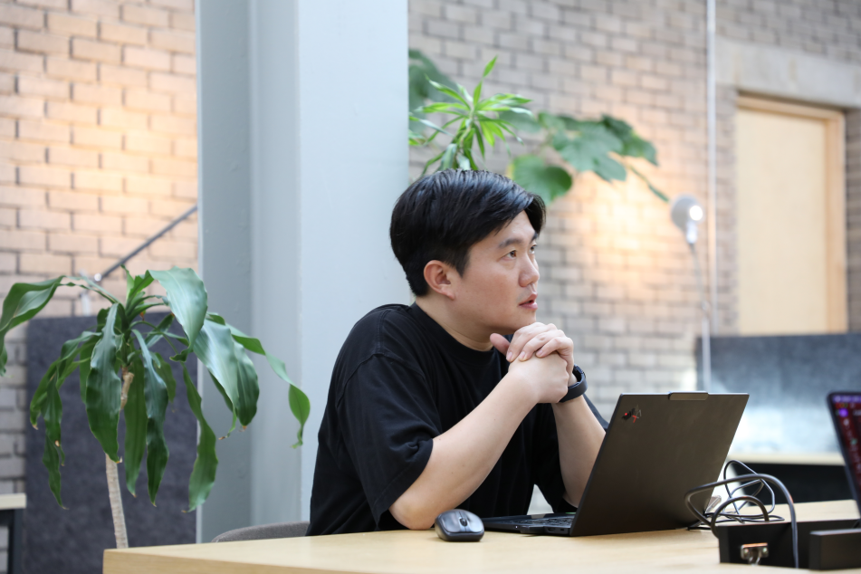송경민 (주)코디미 사업전략 CSO

12:05–부터 12:45까지, 한국 시간
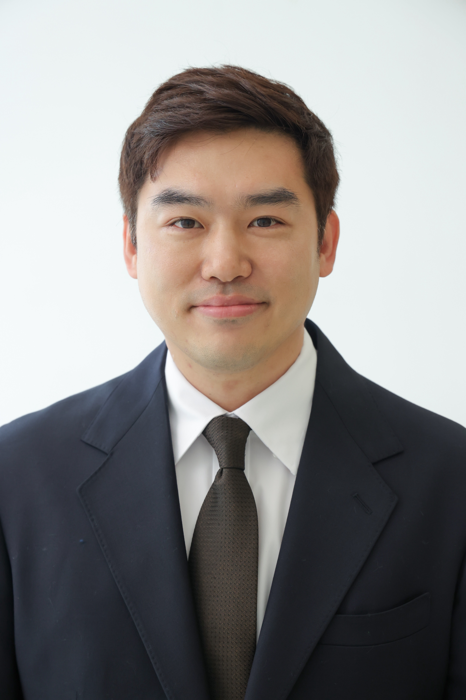박종세 애니브릿지 대표이사 / KAIST 전산학부 부교수

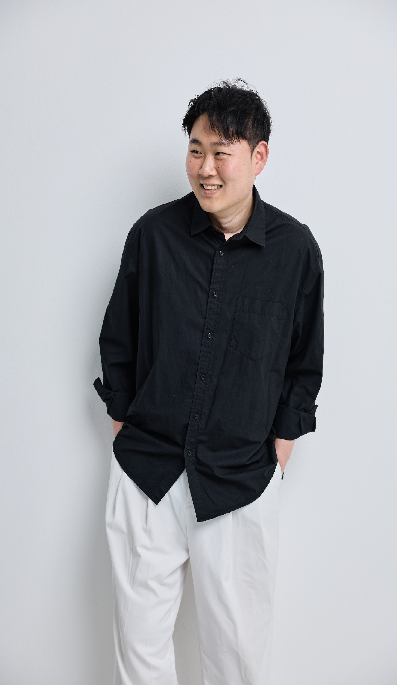정훈구 주식회사 담장너머 공동대표, IT동아 정훈구의 인터'스페이스' 칼럼 연재

12:25–부터 12:45까지, 한국 시간
김도혁 프로 메이커스 협동 조합 팀장 / 모두의연구소 Hell Maker LAB 랩장
13:45–부터 14:05까지, 한국 시간
조인령 모두의연구소 모두의 로보틱스 LAB 랩장, 에이딘로보틱스 연구원
13:45–부터 14:25까지, 한국 시간
Track A · 이삼봉홀
유용하 카카오 모두의 AI Product 총괄 성과리더
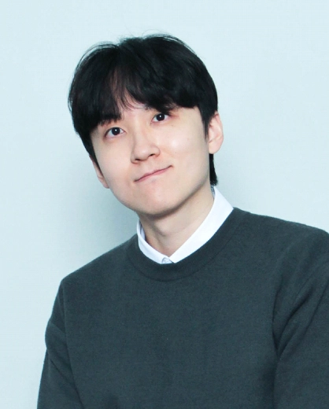김도현 모두의연구소 클래스팀 콘텐츠 프로듀서

조현욱 42Maru AI Engineer, Hello, NPU 랩 랩장
Sasha Seo 제온에이아이 대표
14:05–부터 14:25까지, 한국 시간
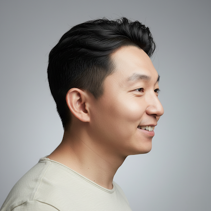신태욱 PixelGravity Industrial Digital Twin & Robotics Simulation Engineer, 모두의연구소 VLA LAB 2기 랩장

14:40–부터 15:00까지, 한국 시간
박철 모두의연구소 DR4R LAB 랩장
14:40–부터 15:20까지, 한국 시간
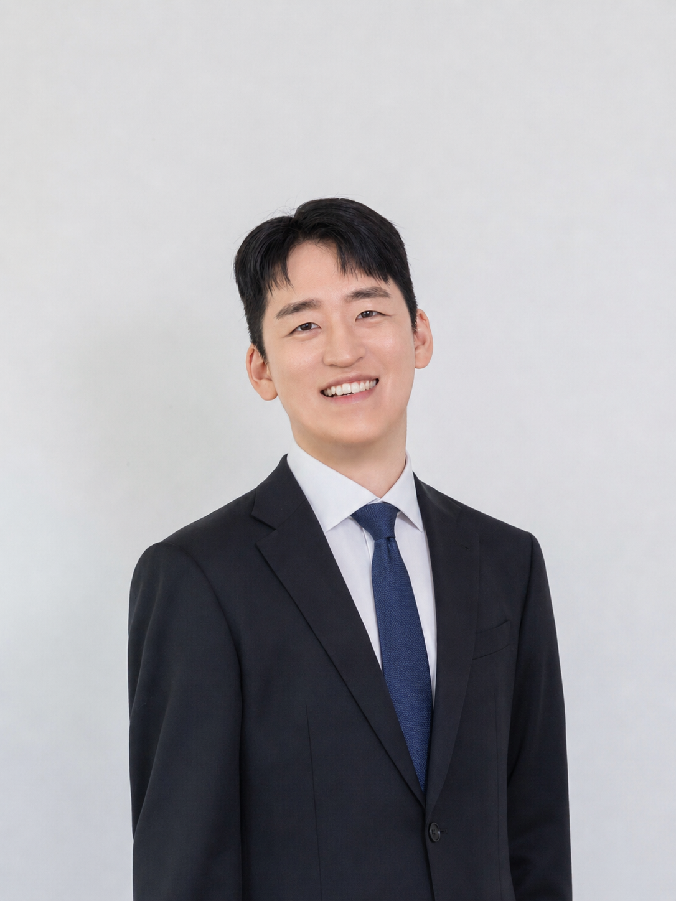김태수 스퀴즈비츠 CTO

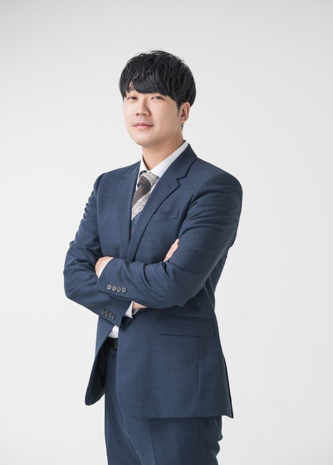김형진 (주)메타크라우드 대표이사 / 명지대학교 교수

15:35–부터 15:55까지, 한국 시간
김민현 커먼컴퓨터 대표
15:35–부터 16:15까지, 한국 시간
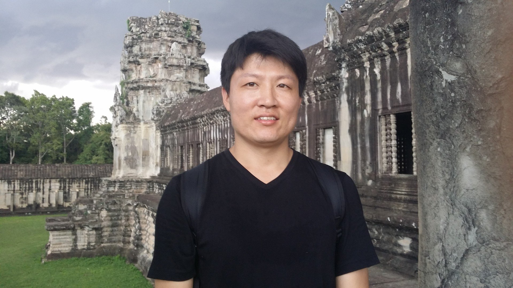송무복 모두의연구소 tensor2silicon LAB 랩원

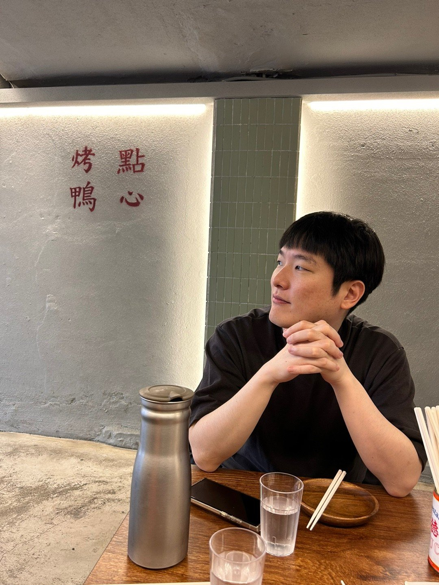박준 주식회사 문리버 / CTO

김유진 aim 대표 / 이화여자대학교 교육공학과
16:30–부터 16:50까지, 한국 시간
이용환 (주)큐멜리온 대표 · 모두의연구소 Pistar LAB 랩장
16:30–부터 17:10까지, 한국 시간
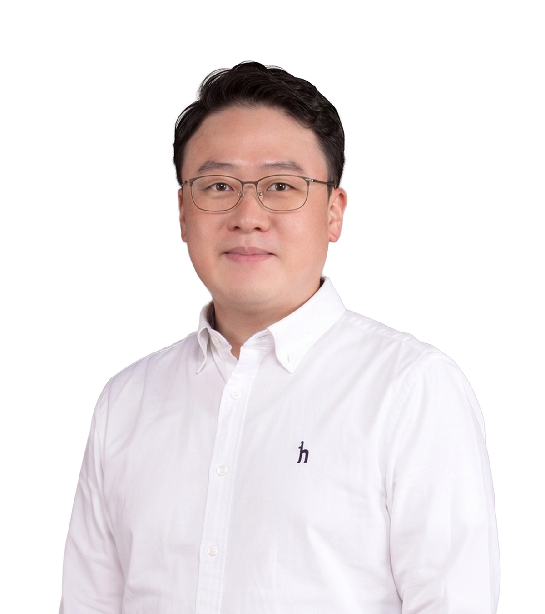최재식 카카오일상AI포럼 위원, KAIST 김재철AI대학원 석좌교수 · (주)인이지 대표이사

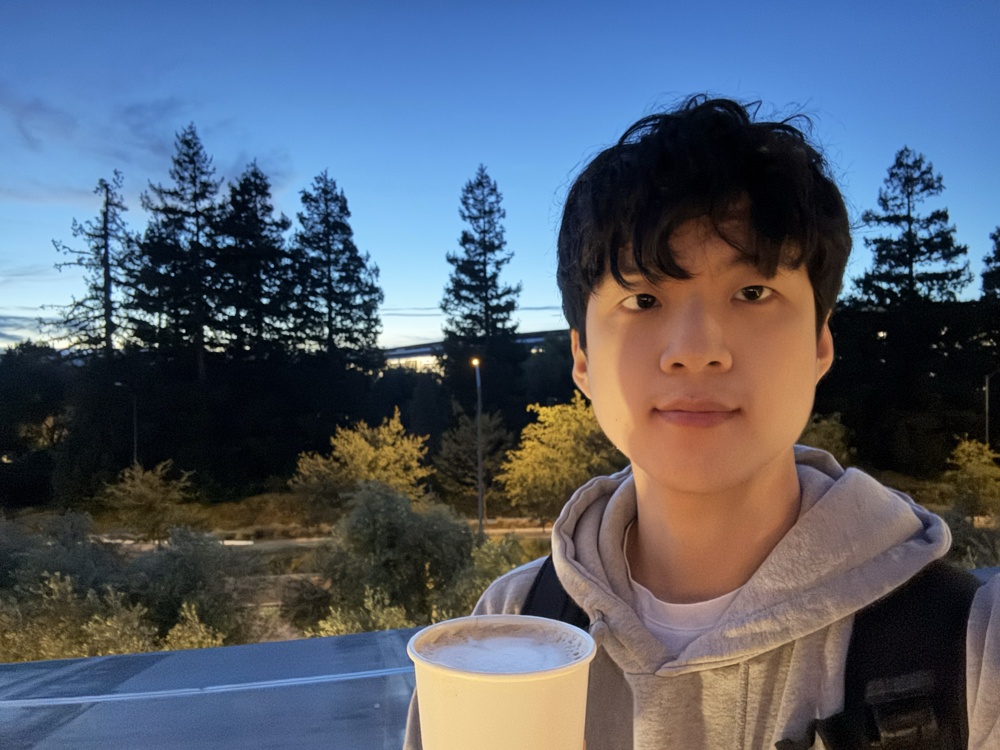김재우 하이퍼엑셀 컴파일러 엔지니어

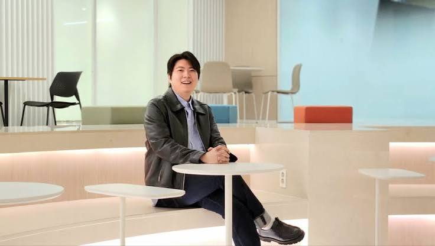정원국 Tellus 대표

16:50–부터 17:10까지, 한국 시간
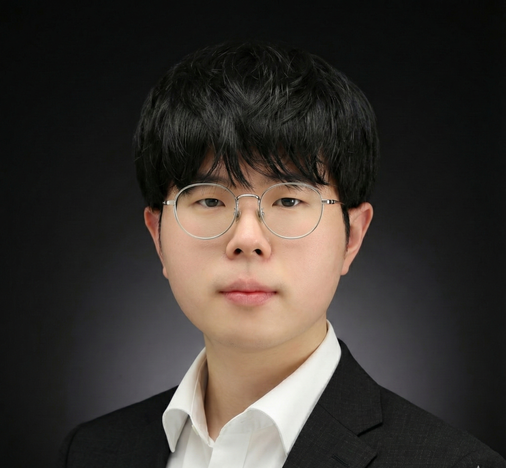이태경 페어랩스 AI Engineer / 모두의연구소 퀀트 LAB 랩장
